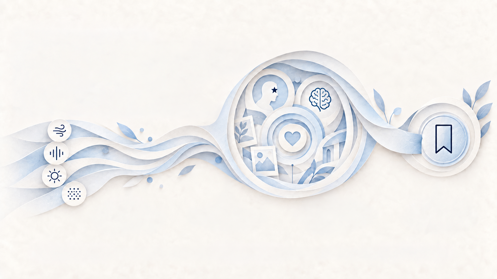

WHY THIS MATTERS TO YOUR BUSINESS
Experience creates value
Sensory cues shape how people feel —
and that shapes what brands gain.
When sensory touchpoints work together, brands create more than atmosphere. They create comfort, memory, engagement, preference, premium perception, and long-term loyalty.
MORE COMFORT
Thoughtful sensory design reduces friction and creates ease.
STRONGER MEMORY
Scent, sound, and sight create cues that people remember.
HIGHER ENGAGEMENT
Multi-sensory environments invite people to stay, explore, and connect.
GREATER PREFERENCE
Positive experiences build emotional connection and brand choice.
PREMIUM PERCEPTION
Consistent sensory quality signals care, craft, and differentiation.
STRONGER LOYALTY
Meaningful experiences turn customers into advocates and long-term value.
- SENSORY CUES
- HUMAN RESPONSE
- BRAND EXPERIENCE
- BUSINESS VALUE
WHY THIS MATTERS TO YOUR BUSINESS
More comfort, Less friction
Comfort reduces stress — and keeps
people open, relaxed and receptive.
Thoughtful sensory design removes friction from the experience. It helps people feel at ease, supports longer dwell time, and creates a more welcoming environment.
Calm Atmosphere
Soothing surroundings reduce mental load and promote relaxation.
Ease & Flow
Seamless sensory transitions make the experience feel effortless.
Emotional Comfort
Comfort fosters trust, positivity, and a sense of belonging.
Longer Stay
When people feel good, they stay longer and engage more.
- Sensory Ease
- Positive Feeling
- Better Experience

WHY THIS MATTERS TO YOUR BUSINESS
Memory makes brands last
Sensory cues turn moments into
memories people can recall and revisit.
Scent, sound, sight and touch help anchor experiences in memory. The more coherent the cues, the easier a brand is to remember and recognize.
Recognition
Consistent sensory cues make your brand instantly familiar across contexts.
Recall
Well-designed cues help people retrieve brand experiences more easily.
Emotional Anchor
Sensory cues connect to feelings, deepening emotional relevance.
Lasting Impression
Memorable experiences leave a mark that endures beyond the moment.
- Cue Consistency
- Stronger Recall
- Brand Memory
WHY THIS MATTERS TO YOUR BUSINESS
Engagement grows with involvement
When people feel invited by the environment,
they stay longer, explore more and interact more deeply.
Multi-sensory experiences attract attention and create curiosity. They encourage people to look closer, move further, and engage more meaningfully with the brand.
Attention
Sensory cues capture attention and stand out in a busy environment.
Exploration
Inviting spaces spark curiosity and encourage people to explore more.
Interaction
Hands-on moments and sensory engagement invite deeper brand connection.
Dwell Time
Comfort and engagement inspire people to stay longer and absorb more.
- Sensory Invitation
- Interaction
- Deeper Engagement
WHY THIS MATTERS TO YOUR BUSINESS
Preference is felt before it is explained
Positive sensory experiences influence choice
before customers can fully describe why.
How a brand feels can shape preference in subtle but powerful ways. Comfort, familiarity, and coherence make one option feel more right than another.
Emotional Fit
Sensory cues create an emotional resonance that feels personally right.
Familiarity
Known sensory patterns reduce uncertainty and make experiences instantly approachable.
Choice Confidence
Positive sensory input reinforces the sense that the choice is the right one.
Brand Preference
These impressions translate into stronger preference and repeat loyalty.
- Feeling
- Preference
- Choice
WHY THIS MATTERS TO YOUR BUSINESS
Loyalty grows from meaningful experiences
When an experience feels consistent and
personal, customers return, recommend
and remember.
Loyalty is not built through transaction alone. It grows when people feel emotionally connected, trust the experience, and want to come back.
Return
Consistent, thoughtful experiences bring customers back naturally.
Trust
Reliable interactions build confidence and deepen emotional connection.
Advocacy
Happy customers share their experiences and recommend your brand to others.
Long-Term Value
Loyal customers contribute more over time and strengthen your brand's future.
- Connection
- Return
- Loyalty
WHY THIS MATTERS TO YOUR BUSINESS
From experience to business value
Human response is where sensory design
becomes commercial impact.
Sensory cues shape perception, emotion and behavior. Those human responses create stronger experiences, and stronger experiences create business value.
Sensory Cues
scent, sight, sound, touch
Human Response
comfort, memory, engagement
Brand Experience
preference, trust, differentiation
Business Value
loyalty, premium, growth